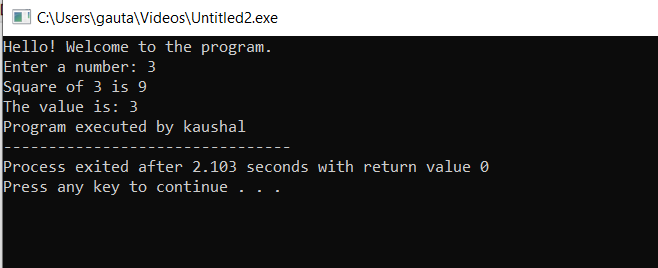
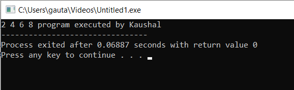

Topics
Understanding Functions in C
a. Define Function
A function in C is a block of code designed to perform a specific task. It helps to break a program into smaller, manageable, and reusable sections.
int add(int a, int b) { return a + b; }
b. Syntax of Functions
The basic syntax of a function in C includes the return type, function name, parameters inside parentheses, and the function body enclosed in braces.
return_type function_name(parameter_list) {
// body of the function
}
c. Types of Functions
Functions in C are mainly classified into:
-
Library Functions: Predefined functions provided by C
standard libraries, such as
printf(),scanf(), andsqrt(). - User-defined Functions: Functions created by the programmer to perform specific tasks as needed in the program.
void greet() {
printf("Hello, world!");
}
Understanding Function Components in C
d. Components of Function
A complete function implementation in C consists of several key components that work together to define and execute the function's behavior.
i. Function Prototype
A function prototype declares the function's interface before its actual implementation, informing the compiler about the function's name, return type, and parameters.
Example:
// Function prototype
int add(int a, int b);
Characteristics:
- Ends with a semicolon
- Parameter names are optional in prototype
- Enables calling functions before their definition
ii. Function Call
A function call invokes the function's execution by using its name followed by actual arguments in parentheses.
Example:
int result = add(5, 3); // Function call
Characteristics:
- Must match the prototype's parameter count and types
- Can be used in expressions or as standalone statements
- Control transfers to the function during execution
iii. Function Definition
The function definition contains the actual implementation of the function, including the function header and body with all statements.
Example:
int add(int a, int b) { // Function definition
return a + b;
}
Characteristics:
- Must match the prototype's return type and parameters
- Contains the executable code block
- Can be placed anywhere in the source file (after prototypes)
iv. Return Type
The return type specifies the data type of the value the function returns to the caller.
Examples:
int calculateTotal(); // Returns integer
float getAverage(); // Returns floating-point
void displayResults(); // Returns nothing
Characteristics:
voidindicates no return value- Must match the type of value in return statements
- Determines how the function can be used in expressions
Function Classification in C
Classification Based on Return Type and Parameters
1. Function with No Parameters and Value-Returning
Functions that generate and return data without requiring any input
Example: Get current temperature
float getTemperature() { // Some sensor reading logic return
26.5; }
When to use: When you need computed/retrieved values that don't depend on inputs
2. function with Parameters and Value-Returning
Functions that transform input parameters into computed results
Example: Calculate power
double power(double base, int exponent)
{ double result =
1; for(int i=0; i<exponent; i++) result *= base; return
result; }
When to use: For mathematical operations, data transformations, and reusable calculations
3. function with No Parameters and Non-Returning
Self-contained operations that perform tasks without inputs or outputs
Example: Display system status
void showSystemStatus()
{ printf("System: ONLINE\n");
printf("Users: 24\n");
printf("Storage: 78%% used\n"); }
When to use: For displaying information, menu systems, or initialization routines
4. function with Parameters and Non-Returning
Operations that use inputs to produce side effects without returning values
When to use: For operations that modify external state (files, displays, etc.) based on parameters
Quick Comparison
| Category | Return Value | Parameters | Common Uses |
|---|---|---|---|
| Type 1 | Yes | No | Getting configuration values, random generators |
| Type 2 | Yes | Yes | Mathematical operations, data processing |
| Type 3 | No | No | Display functions, system commands |
| Type 4 | No | Yes | File operations, output generation |
Different Types of Functions in C
i. Function with Return Type but No Arguments
This type of function returns a value but does not take any parameters.
int getNumber() {
int n;
scanf("%d", &n);
return n;
}
ii. Function with Return Type and with Arguments
This function takes arguments and returns a value after processing them.
int square(int x) {
return x * x;
}
iii. Function with No Return Type and No Arguments
This function performs an action but does not return any value or take any input.
void greet() {
printf("Hello!");
}
iv. Function with No Return Type but with Arguments
This function accepts arguments but does not return any value.
void display(int x) {
printf("The value is: %d", x);
}
Demonstrating All Four Types of Functions in C
Full C Program
#include <stdio.h>
// Function with return type but no arguments
int getNumber() {
int n;
printf("Enter a number: ");
scanf("%d", &n);
return n;
}
// Function with return type and arguments
int square(int x) {
return x * x;
}
// Function with no return type and no arguments
void greet() {
printf("Hello! Welcome to the program.\\n");
}
// Function with no return type but with arguments
void display(int x) {
printf("The value you entered is: %d\\n", x);
}
int main() {
greet();
int num = getNumber();
int result = square(num);
printf("Square of %d is %d\\n", num, result);
display(num);
printf("Program executed by kaushal\\n");
return 0;
}

Explanation of Function Types
- getNumber() → Returns a value (int), takes no argument.
- square(int x) → Takes an int argument and returns an int.
- greet() → Does not take arguments and does not ret
Understanding Storage Classes in C
i. Automatic Storage Class
The automatic storage class is the default for all local variables declared inside a function or block. Variables are created when the block is entered and destroyed on exit.
void example() {
int x = 10; // automatic by default
}
ii. External Storage Class
The external storage class is used to define global variables that
are accessible across multiple files using the
extern keyword.
extern int count; // declared in another file
iii. Register Storage Class
The register storage class suggests that a variable should be stored in a CPU register for faster access. It is generally used for frequently accessed variables.
register int i;
iv. Static Storage Class
The static storage class keeps a variable's value intact between multiple function calls. It retains its value even after the function exits.
void demo() {
static int x = 0;
x++;
printf("%d", x);
}
Understanding Recursive Functions in C
What is a Recursive Function?
A recursive function is a function that calls itself to solve a smaller subproblem of the original problem. It continues calling itself until a base condition is met, which stops the recursion.
Syntax of Recursive Function
The basic syntax of a recursive function in C is:
return_type function_name(parameters) {
if (base_condition) {
// stop condition
return value;
} else {
// recursive call
return function_name(smaller_problem);
}
}
Example: Factorial Using Recursion
This function calculates the factorial of a number using recursion.
#include <stdio.h>
int factorial(int n);
int main() {
int num;
printf("Enter a number: ");
scanf("%d", &num);
printf("Factorial of %d is %d and executed by
kaushal", num, factorial(num));
return 0;
} int factorial(int n){
if (n == 0 || n == 1)
return 1;
else
return n * factorial(n - 1);
}
Calling factorial(5) will return 120,
since 5 × 4 × 3 × 2 × 1 = 120.
Key Points
- Every recursive function must have a base case to avoid infinite recursion.
- Recursive solutions are elegant but may consume more memory due to function call stacks.
- They are commonly used in problems like factorial, Fibonacci, tree traversals, etc.
Demonstration of Passing Array to a Function in C
Introduction
In C, you can pass an array to a function by passing the array name, which acts as a pointer to the first element. This allows the function to access and modify the original array elements.
Syntax
Here is the general syntax of passing an array to a function:
void function_name(datatype array_name[], int size) {
// function body
}
Example 1: Printing Elements of an Array
#include <stdio.h>
void printArray(int arr[], int size) {
for (int i = 0; i < size; i++) {
printf("%d ", arr[i]);
}
}
int main() {
int numbers[] = {10, 20, 30, 40, 50};
int n = 5;
printArray(numbers, n);
printf("program executed by Kaushal");
return 0;
}
Example 2: Modifying Elements of an Array
#include <stdio.h>
void doubleElements(int arr[], int size) {
for (int i = 0; i < size; i++) {
arr[i] *= 2;
}
}
int main() {
int data[] = {1, 2, 3, 4};
int n = 4;
doubleElements(data, n);
for (int i = 0; i < n; i++) {
printf("%d ", data[i]);
}
printf("program executed by Kaushal");
return 0;
}
Output: 
Arrays in C are always passed by reference, meaning the function can modify the original array elements directly.